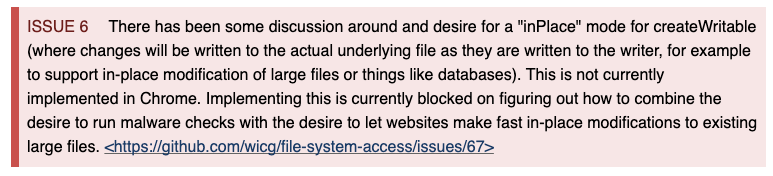

Plan
Careful, spoilers
 Plan
Plan
- Project FUGU;
- Web platform and tests
-
File System Access API
- What is that
- Why is that
- Pros and Cons
- Security
- Demos
- Questions
The capabilities project is a cross-company effort with the objective of
making it possible for web apps to do anything iOS/Android/desktop apps
can, by exposing the capabilities of these platforms to the web platform,
while maintaining user security, privacy, trust, and other core tenets of
the web.
You can see the full list of new and potential capabilities and the stage
each proposal is in on the
FUGU🐡 API tracker
If you are interested you can join conversations there
Alright, we're done with ads, let's finally get back to the point!
 Let's take a look at what FUGU page says about File System Access API
Let's take a look at what FUGU page says about File System Access API
 Let's take a look at what FUGU page says about File System Access API
Let's take a look at what FUGU page says about File System Access API
By the way, it was first shipped in Chrome 91
🤓🤓🤓
 Right! Nothing, my curious minds!
Right! Nothing, my curious minds!
🥳🥳🥳
Right! Nothing, my curious minds!
🥳🥳🥳
Because there are no tests on web platform for File System API just yet
But what is File System Access API? What does it mean for those all who
uses web apps?
But what is File System Access API? What does it mean for those all who
uses web apps?
Well, let's figure it out
File System Access API is obviously is the application programming
interface.
 More formally, how the first implementer states:
More formally, how the first implementer states:
This API enables developers to build powerful apps that interact
with other (non-Web) apps on the user’s device via the device’s file
system.
(c) Chrome (taken from
here
)
What is the reason for that feature?
In native applications, there are common file access patterns.
In native applications, there are common file access patterns. For
instance (all examples are high-level):
-
For Android (via Kotlin of Java):
-
File API
-
Open files using stream
- etc
-
For IOS:
-
File Manager
-
For desktop:
- Windows APIs
- Linux Filesystems API
But are there any for browsers?
But are there any for browsers? Spoiler: topic of report says about it 🥸
Let's consider cases when you may need to interact with FS (File System)
According to opinion of chrome team, the reason to interact with file
system is to interact with native applications.
Here it is
The main overarching goal here is to increase interoperability of
web applications with native applications, specifically where it
comes to being able to operate on the native file system.
Cases when you may need it
Cases when you may need it
Cases when you may need it
Example of custom setup (we can do it!)
Are there any real-life examples of usage of that brand new
API?
Of course there are 🥳🥳🥳
Check them!
It works poorly in iframe that I use for demos, but here is the
link
It works poorly in iframe that I use for demos, but here is the
link
OK

OK
But what is under the hood?
A bit of terminology
 An entry is either a file entry or a
directory entry.
An entry is either a file entry or a
directory entry.
An entry is either a file entry or a
directory entry.
An entry is either a file entry or a
directory entry.
i.e. something that represents file of directory in terms of FSA API
So let's take a look at terms for File API
A Blob object refers to a byte sequence, and has a size attribute which is
the total number of bytes in the byte sequence, and a type attribute,
which is an ASCII-encoded string in lower case representing the media type
of the byte sequence.
Term defined by File API spec made by W3C
A Blob blob has an associated get stream algorithm, but we'll stick to
that fact only otherwise it is for a long time
We better take a look at how FSA API and Blobs are related
Interface of File Entry has method called createWritable
Interface of File Entry has method called createWritable
Interface of File Entry has method called createWritable
and has method called write() that accepts object of
properties where Blob data can be found
OK
OK
But what about its issues? Looks a bit flawless, doesn't it?
There are so many of them that I would be able to create a new little
report about them.
🚩 Note: I'd like to talk about problems that were issued by spec
authors! 🚩
Security Risks
-
Electron does not update regularly and also is about to not to
effectively defend XSS
-
Small utilities, such as archivers and image/PDF resizing/cropping,
are often native applications that run with the user’s full
privileges. Some of these applications deliver malware.
Worth mentioning the following attack
Malware being written to file.
Solution:
- apply things like Mark-of-th-Web to files
-
the API does not provide ability to make files executable unless
opened files are already exucutable
- run malware checks (ffects performance)
Ransomware attacks
Solution:
- Does not allow access to sensitive directories and files
Fillin up a user's disk
Filling up a users disk Other than files in the origin private file
system, files written by this API are not subject to storage quota. As
such websites can fill up a users disk without being limited by quota,
which could leave a users device in a bad state (do note that even with
storage that is subject to storage quota it is still possible to fill
up, or come close to filling up, a users disk, since storage quota in
general is not dependent on the amount of available disk space). Without
this API websites can write data to disk not subject to quota
limitations already by triggering downloads of large files (potentially
created client side, to not incur any network overhead). While the
presence of truncate() and writing at a potentially really large offset
past the end of a file makes it much easier and lower cost to create
large files, on most file systems such files should not actually take up
as much disk space as most commonly used file systems support sparse
files (and thus wouldn’t actually store the NUL bytes generated by
resizing a file or seeking past the end of it). Whatever mitigations
user agents use to guard against websites filling up a disk via either
quota managed storage or the existing downloads mechanism should also be
employed when websites use this API to write to disk.

No changes made to fileEntry won't be reflected in real file until
writable stream is closed.


 https://wicg.github.io/file-system-access/
https://wicg.github.io/file-system-access/